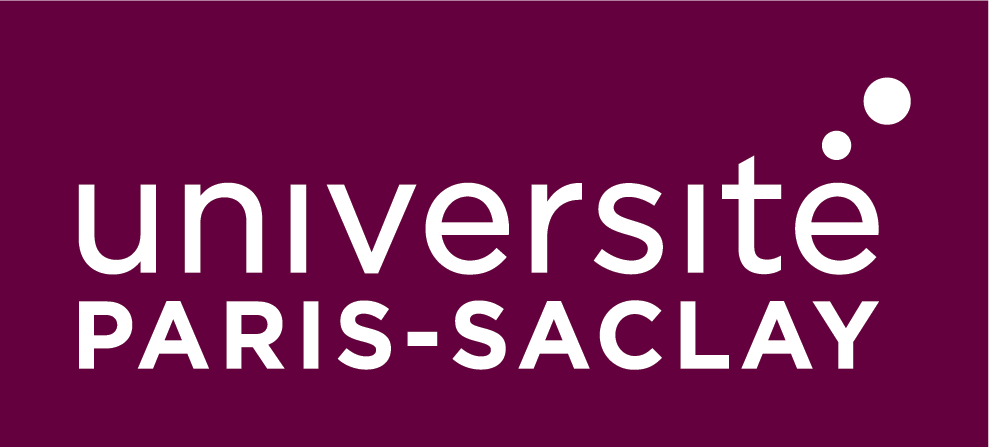

Education

Paris-Saclay University
September 2022 - September 2023
Paris, France
Master of Science, Artificial Intelligence
Main Courses: ML Algorithms, Deep Learning, Computer Vision,
Large-Scale Distributed Data Processing, Probabilistic Generative Models, Applied Statistics, Advanced
Optimization, Signal Processing, NLP, Information Retrieval, Reinforcement Learning.

Ecole des sciences de l'information
September 2018 - August 2022
Rabat, Morocco
Master of Engineering, Data and Knowledge
GPA: 3.25
Main Courses: Data Structures and Algorithm, Business Intelligence and
Data Warehousing, Big Data, Artificial Intelligence, Expert Systems, Statistics, Machine Learning, Network
Security, Operating Systems, Knowledge Management.
Classes Preparatoires Aux Grandes Ecoles
September 2016 - August 2018
Agadir, Morocco
MPSI, MP
Main Courses: Mathematics, Physics, Engineering Sciences, Chemistry,
Computer Science.